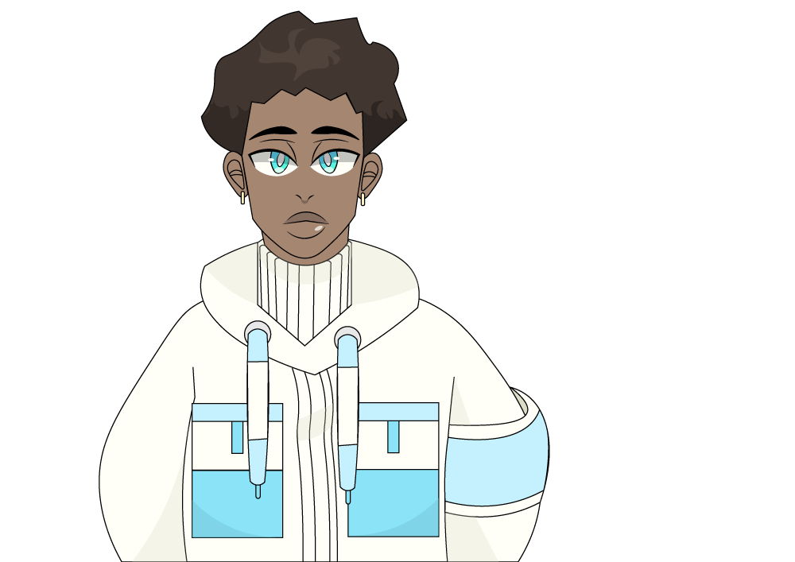

The name of my character is Micah Eluve. He is an African American male around the height of 5’3 and currently weighs 125lbs. He has a medium to dark complextion. When it comes to his hair, it’s more so on the fro side and is faded on the sides as well as the back of his head. When it comes to his personality Micah can be quite cheeky. He’s fully capable of standing for himself and refus- es to take handout from others. This is mostly due to his upbringing as he didn’t grow up in the best neighbor- hoods. Regardless, when he is with someone he can trust he can become vulnerable and loyal. He is also one of the many vesselles selected by Love to reside inside of the Dome. However, to Micah this isn't a badge of honor. He hates that he could be potentially locked away in this sacred dome and is constantly pushed into accepting his fate. Without accepting it on the other hand he runs the risk of Fuse being unable to run and be protected by dangers.
